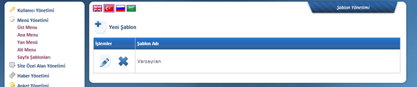

Sayfa Þablonlarý:

Sitede yer alan sayfalarý birbirinden farklý uygulamalarla kullanmak için bu alanda þablon oluþturulmaktadýr. Bir sayfa grubunda reklam alaný bulunmasýný ya da belli bir grup içinde örneðin Duyuru gösterimi olmasýný saðlayabilirsiniz.